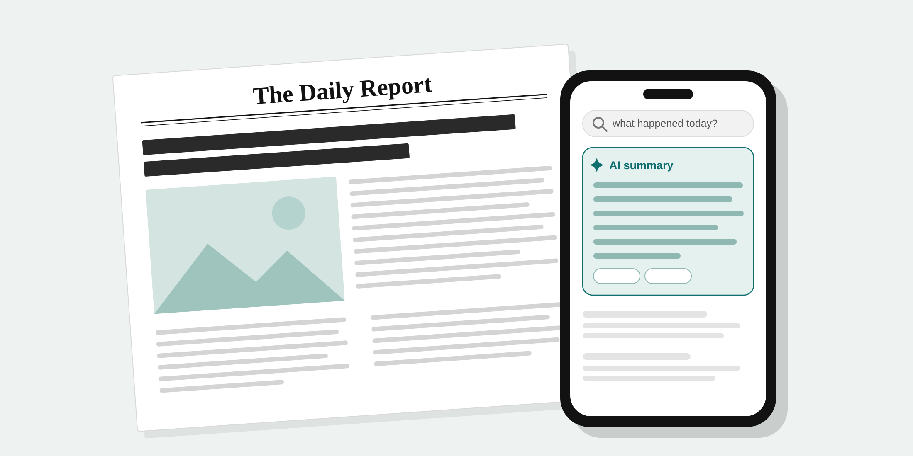

AI summaries are making news easier to access. But as readers get used to answers without clicks, the future of the journalism behind those answers becomes less certain.
By Shriya Chockalingam · November 2026

An AI-generated summary can deliver the answer before a reader ever reaches the article behind it. Illustration created with Claude (AI)
The news, without the reading
You search for a developing story. Google provides a summary, highlights a few details, and links to its sources. Within seconds, you have a general idea of what happened.
Do you open the article?
For many searches, the answer is no. And increasingly, search engines are designed to make that choice easier. Google’s AI Overviews place AI-generated summaries above traditional search results, giving users an immediate response without requiring them to visit a news website.
The appeal is obvious. Readers save time, avoid sorting through multiple links, and get a quick explanation of unfamiliar topics. For someone checking a basic fact, that may be all they need.
But news is not always a simple question with a simple answer. Behind a headline may be months of investigation, interviews, documents, and editorial decisions. A short summary can communicate the result without necessarily conveying the reporting that produced it.
The question is not just whether people are reading less. It is what happens when the answer becomes easier to access than the journalism behind it.
When the click disappears
A search that ends without a visit to another website is known as a zero-click search. It is not a new behavior. Search snippets, maps, calculators, and knowledge panels have answered questions directly for years. AI summaries, however, introduce a more substantial response: instead of a few extracted details, users may receive an organized explanation of an entire topic.
A 2025 analysis by Press Gazette, using Similarweb data, found that the effect varied considerably across publishers. The New York Times, for example, had a 25.2% zero-click rate among its top keywords that triggered AI Overviews, compared with 40.1% across all its top keywords. But only six of its top 100 keywords triggered an AI Overview, making that comparison difficult to generalize.
Zero-click rates for selected news sites, May 2025. For most of these publishers, searches that triggered an AI Overview ended without a click more often than their searches overall. The New York Times was an exception, but only 6 of its top 100 keywords triggered an AI Overview. Source: Press Gazette analysis of Similarweb data (Tobitt, 2025).
The New York Times result is a useful reminder that AI Overviews do not explain every zero-click search. The kinds of information people search for, the features Google displays, and the publishers involved all matter.
Still, there is evidence that AI Overviews can reduce visits to original sources. In a 2026 field experiment, researchers Saharsh Agarwal and Ananya Sen found that, when an AI Overview appeared, outbound organic clicks decreased by 39.8% and zero-click searches increased by 34.5%. The findings suggest that the summaries can change whether users leave the search page, even when the original sources remain available.
The difference between having access to an article and choosing to read it may be becoming increasingly important.
A gateway, or a substitute?
Search for who won an election, and an AI summary will probably tell you everything you need. Search for why they won, and a short answer starts to fall apart. That question calls for reporting on voter concerns, campaign decisions, historical context, and competing explanations.
Two ways a search can end. A summary can answer a reader’s question, or raise new ones that send them to the original reporting. Graphic by Shriya Chockalingam
The information you need changes the value of the summary.
Researchers Paulo Couraceiro and Pedro Caldeira Pais have a name for the first path: news sufficiency. In their words, [insert a direct quote of their definition of news sufficiency] (Couraceiro & Pais, 2026). Across 72 news-related queries on ChatGPT, Gemini, and Google Search, they found that a condensed answer could feel complete even when important details were missing.
But summaries can also lead readers further. In an experiment with Chinese mobile news readers, 81.9% of participants clicked through to the full article after seeing an AI-generated summary, and reading the article largely closed the comprehension gap that the summary alone left behind (Fan, Liu, & Huang, 2026).
Among people who use AI chatbots for news, 42% say they always or often click through to original sources. Many want to check what they have read: [insert a direct quote from the report about verifying information or learning more] (Arguedas, 2026). That is self-reported behavior, and it concerns chatbots rather than Google’s AI Overviews, but it shows that a summary does not have to be the end of the story.
A summary can be a stopping point, or it can be an introduction. Which one it becomes depends on what you are looking for, how complete the summary seems, and whether it gives you a reason to keep going.
What happens to the reporting behind the answer?
The consequences extend beyond the number of visitors to a news website.
Original journalism requires resources. Investigative reporting can involve months of work, travel, legal review, document analysis, and interviews. Local reporting requires journalists who attend public meetings, follow school boards, investigate housing decisions, and hold local officials accountable.
Publishers have traditionally supported this work through a combination of advertising, subscriptions, and audience traffic. If readers increasingly receive information without visiting the sources, publishers may lose opportunities to earn revenue and build relationships with their audiences.
That does not mean every missed click eliminates funding for a story. Nor does it mean AI summaries alone will determine the future of news. But a business model built around attracting readers becomes harder to sustain when platforms can satisfy those readers without sending them to the publisher.
The concern is not simply that newspapers might become less profitable. It is that financial pressure could affect which stories get reported, how much time journalists can spend investigating them, and whether smaller outlets can afford to keep covering their communities.
The reporting behind the answer. The last two steps are potential consequences, not guaranteed outcomes. Graphic by Shriya Chockalingam
There is also a question of what readers actually receive when they rely on summaries. A summary may accurately convey the central point while leaving out the evidence, qualifications, or perspectives that give the story meaning.
A 2026 study by Xu, Iqbal, and Montgomery examined more than 55,000 queries and evaluated the claims made in Google AI Overviews. The researchers found that 11% of the claims they checked were unsupported by the cited pages. They also found that source credibility and the accuracy of individual claims were not necessarily the same thing.
A link to a credible source does not automatically mean every statement in a summary is supported by that source. And even when a summary is accurate, it may leave out details that matter.
The answer is not the whole story
AI summaries offer a real benefit. They can make information more accessible, help readers navigate unfamiliar subjects, and provide a useful starting point for understanding the news. Asking people to abandon them entirely would ignore why they have become popular in the first place.
But convenience should not be confused with completeness.
A summary can tell us what happened. Original reporting can show us how it happened, why it matters, who is affected, and what remains uncertain. Those distinctions are especially important when the subject involves public policy, elections, international conflict, or decisions that shape our everyday lives.
Readers do not need to open every article they encounter. But they should recognize when a quick answer is enough and when a story deserves more attention. Platforms, meanwhile, should consider how the information they provide affects the publishers whose reporting makes those answers possible.
The future of news may involve more summaries, more AI, and fewer traditional search clicks. The challenge is ensuring that easier access to information does not come at the expense of the original reporting that makes that information worth having.
Because getting an answer is not always the same as understanding the story.
Sources and further reading
Couraceiro, Paulo, and Pedro Caldeira Pais. “News Sufficiency: How Generative AI Summaries Reduce News Consumption in Zero-Click Searches.” Journalism and Media, 2026. Read the study.
Fan, Liu, and Huang. “Skim or Swim? Investigating AI-Generated Summaries, Trust, and Comprehension in Chinese Mobile Reading.” 2026. Read the study.
Agarwal, Saharsh, and Ananya Sen. “The Impact of Google AI Overviews on Publisher Traffic and User Experience: Evidence from a Field Experiment.” 2026. Read the paper.
Xu, Haofei, Umar Iqbal, and Jacob M. Montgomery. “Measuring Google AI Overviews: Activation, Source Quality, Claim Fidelity, and Publisher Impact.” 2026. Read the study.
Arguedas, Amy Ross. “Emerging Uses of AI Chatbots for News and What It Means for Journalism.” Reuters Institute Digital News Report, 2026. Read the report.
Tobitt, Charlotte. “How Google AI Overviews Is Fuelling Zero-Click Searches for Top Publishers.” Press Gazette, 2025. Read the analysis.
Luo, Zaichen, et al. “AI-Generated News Summary: Reshaping Reader Engagement on News Platforms.” Omega, 2026. Read the article.